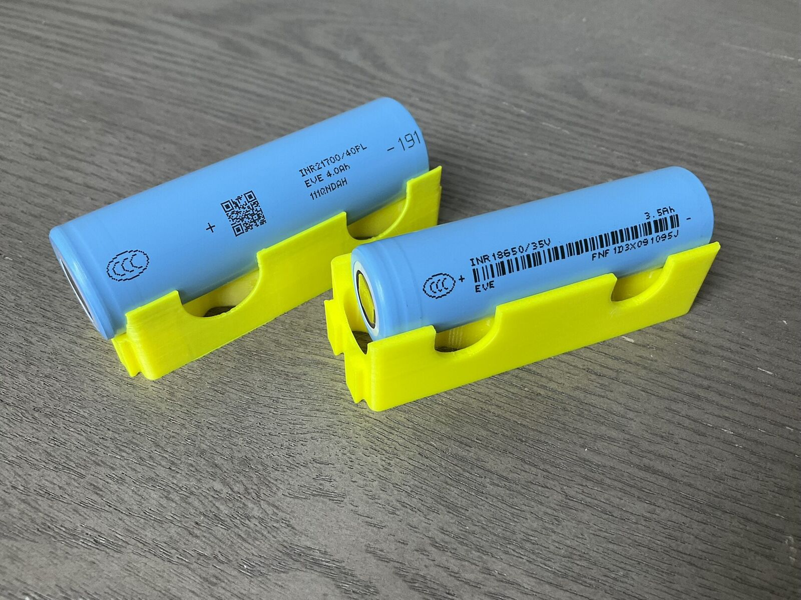

Lithium's Comeback Cools: Carbonate Slips to ¥151,750 on Jianxiawo Restart Talk
After doubling in the first quarter, the price eases to a three-month low as CATL's suspended Jiangxi mine moves closer to reopening. It is still ~160% above a year ago.

The lithium rally that defined the past year has hit its first real speed bump. Lithium carbonate in China slipped to ¥151,750 per tonne, the lowest level in three months, unwinding part of a rebound that had taken the price to two-year highs.
The trigger is a mine that is not even producing. Contemporary Amperex Technology (CATL) suspended its Jianxiawo lepidolite operation in Jiangxi province last year over permitting issues — a shutdown that removed meaningful supply and helped fuel the price recovery. A recent government notice on a preliminary land assessment has now convinced traders that the site could restart in the second half of 2026.
Perspective: still a violent re-rating
The pullback needs context. Lithium traded as high as ¥160,000 at the start of July, and even at current levels the price stands roughly 160% above where it was a year ago, after effectively doubling during the first quarter.
Analysts expect supply and demand to remain relatively tight through the second half: significant new battery capacity is scheduled to come online in the third quarter, and inventories along the chain remain thin by historical standards.
Supply discipline, tested
The price recovery is already coaxing idled supply back. Mineral Resources is preparing to restart its Bald Hill mine in Australia after an 18-month suspension, and Core Lithium has restarted its Finniss project. Zimbabwe, meanwhile, has imposed export quotas on lithium concentrates ahead of a full ban on unprocessed exports, pushing investment toward local processing.
How rationally that returning supply behaves will decide whether this correction is a pause — or the top of the cycle's first leg. As Pilbara Minerals chief executive Dale Henderson put it when asked about swing supply: "You'd have to expect people to act rationally as pricing improves."